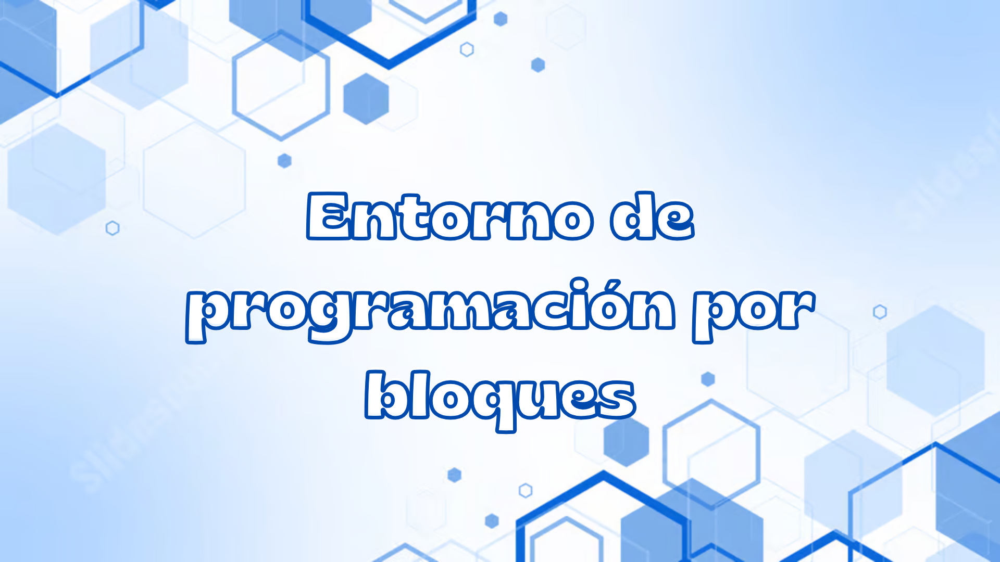
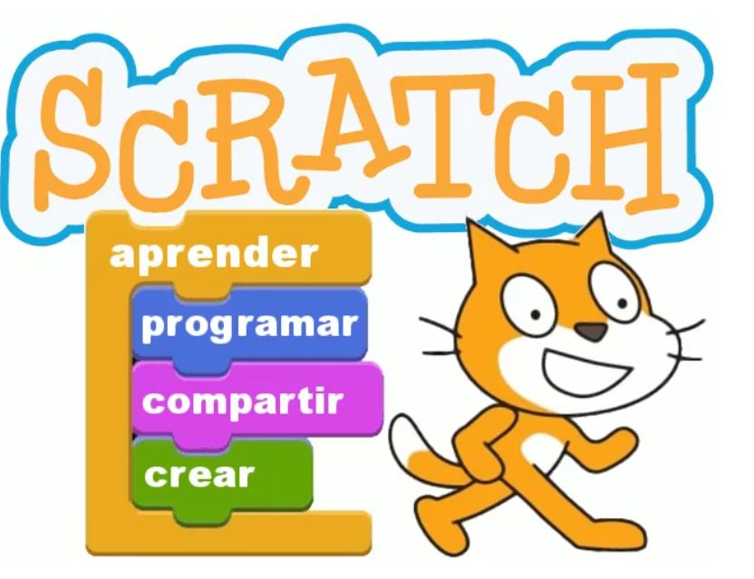
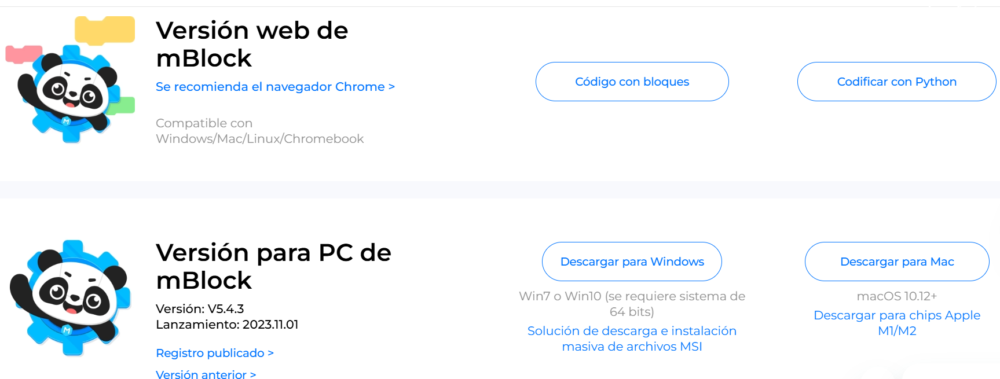
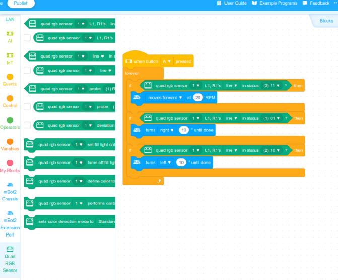

Habilidades lógico-matemático en docentes y estudiantes de escuelas municipales del cantón Loja mediante robótica educativa e inteligencia artificial.
Día 1:Introducción a la programación por bloques
¿Qué es un entorno de programación?
Dame !!click!! para saber más
Los entornos de programación son herramientas que facilitan el aprendizaje y desarrollo de habilidades de programación, combinando programación visual y textual para permitir una transición gradual entre ambas (Ruíz Ramírez et al., 2021).
¿En qué consiste la programación por bloques?
!!Haz click aquí!!

La programación por bloques es un enfoque visual utilizado para enseñar y aprender programación, especialmente en niveles de principiantes. Utiliza componentes o fragmentos de código visuales que se arrastran y sueltan para construir programas, lo que elimina la necesidad de escribir código textual y reduce la necesidad del aprendizaje de sintaxis. (Selwyn-Smith, 2022; Ruiz y Fernandez, 2021; Mohamad, 2011).
Actividad: Instalación
Visitar el sitio https://mblock.cc/pages/downloads, seleccionar la opción de Descarga de acuerdo a su sistema operativo o use la aplicación web según sus preferencias.

Ejecute el programa de instalación y siga las instrucciones en pantalla. Abra el programa MBock, explore su interfaz, familiarizarse con los tres paneles principales: bloques, scripts y escenario.
Para recordar
!!Haz Click!!
MBlock es un entorno de programación visual basado en bloques, cada bloque corresponde a una acción o función específica que el usuario puede arrastrar y soltar en una secuencia para crear un programa.

Obra publicada con Licencia Creative Commons Reconocimiento No comercial 4.0